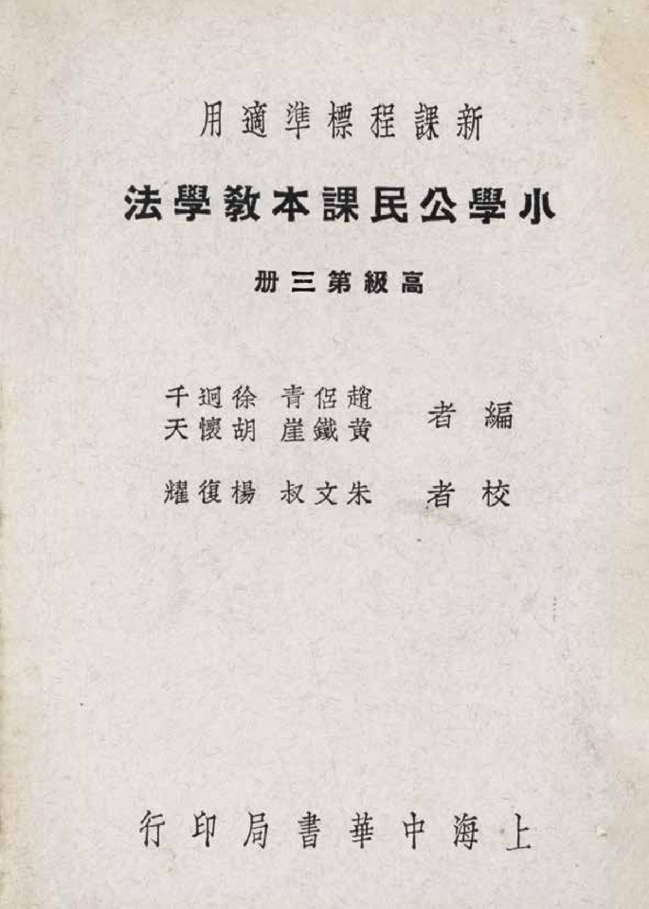

Occurrences
26
Exact minzu hits in this book

Textbook
This view contains all KWIC results for 民族 in this book, followed by the book's individual frequency result.
This table lists every minzu KWIC result found in this textbook.
| No. | Left context | Keyword | Right context |
|---|---|---|---|
| 311 | 一引起動機三民主義有幾個部分?(三個部分。)那三個部分?(就是 | 民族 | 主義,民權主義和民生主義。)第一個部分民族主義的意義,你們都懂了沒有?(懂。)中|山先生爲甚麼要提倡 |
| 312 | 起動機三民主義有幾個部分?(三個部分。)那三個部分?(就是民族主義,民權主義和民生主義。)第一個部分 | 民族 | 主義的意義,你們都懂了沒有?(懂。)中|山先生爲甚麼要提倡民族主義?(目的在促進中|國民族之國際地位 |
| 313 | 主義,民權主義和民生主義。)第一個部分民族主義的意義,你們都懂了沒有?(懂。)中|山先生爲甚麼要提倡 | 民族 | 主義?(目的在促進中|國民族之國際地位平等。)現在我國民族的地位怎樣?(我國民族外受帝國主義者之蹂躪 |
| 314 | 第一個部分民族主義的意義,你們都懂了沒有?(懂。)中|山先生爲甚麼要提倡民族主義?(目的在促進中|國 | 民族 | 之國際地位平等。)現在我國民族的地位怎樣?(我國民族外受帝國主義者之蹂躪內受貪官汚吏之壓迫民族的地位 |
| 315 | 都懂了沒有?(懂。)中|山先生爲甚麼要提倡民族主義?(目的在促進中|國民族之國際地位平等。)現在我國 | 民族 | 的地位怎樣?(我國民族外受帝國主義者之蹂躪內受貪官汚吏之壓迫民族的地位,仍舊絲毫沒有增進)爲甚麼緣故 |
| 316 | |山先生爲甚麼要提倡民族主義?(目的在促進中|國民族之國際地位平等。)現在我國民族的地位怎樣?(我國 | 民族 | 外受帝國主義者之蹂躪內受貪官汚吏之壓迫民族的地位,仍舊絲毫沒有增進)爲甚麼緣故?(原因很多人民不懂民 |
| 317 | 中|國民族之國際地位平等。)現在我國民族的地位怎樣?(我國民族外受帝國主義者之蹂躪內受貪官汚吏之壓迫 | 民族 | 的地位,仍舊絲毫沒有增進)爲甚麼緣故?(原因很多人民不懂民權的意義,沒有力量管理政治,也是一個主因。 |
| 318 | 不能自衞;不能自衞,便不能生存。〔我國的羣衆〕我國羣衆,向來缺乏國家觀念沒有强固的團結力,雖然中華_ | 民族 | 在世界上是最優秀最偉大的民族,可是人心渙散,無組織,無訓練,無紀律,不能發達民權,運用民權,以建設社 |
| 319 | 存。〔我國的羣衆〕我國羣衆,向來缺乏國家觀念沒有强固的團結力,雖然中華_民族在世界上是最優秀最偉大的 | 民族 | ,可是人心渙散,無組織,無訓練,無紀律,不能發達民權,運用民權,以建設社會;所以弄到國弱民貧,奄奄待 |
| 320 | 會;所以弄到國弱民貧,奄奄待斃惟過去的數十年中,民衆受了中|山先生人格的感化和黨義的啓迪,漸漸覺悟到 | 民族 | 地位的危險和民族團結力的重要。所以此後政治上的設施,應該國民黨用全力去組織民衆,訓練民衆,幷依照總理 |
| 321 | 民貧,奄奄待斃惟過去的數十年中,民衆受了中|山先生人格的感化和黨義的啓迪,漸漸覺悟到民族地位的危險和 | 民族 | 團結力的重要。所以此後政治上的設施,應該國民黨用全力去組織民衆,訓練民衆,幷依照總理的遺敎,喚起民衆 |
| 322 | 只想打破一切的束縛,盡量擴充個人的自由。這一來,你也要自由,我也要自由;個人的自由太多了,結果,反使 | 民族 | 失去了團結力。其實眞正的自由,是要爲民族爭自由。要爲民族爭自由,就要恢復民族的團結力,個人就應犧牲一 |
| 323 | 這一來,你也要自由,我也要自由;個人的自由太多了,結果,反使民族失去了團結力。其實眞正的自由,是要爲 | 民族 | 爭自由。要爲民族爭自由,就要恢復民族的團結力,個人就應犧牲一部分的自由。講到平等就是各人的地位平等, |
| 324 | 由,我也要自由;個人的自由太多了,結果,反使民族失去了團結力。其實眞正的自由,是要爲民族爭自由。要爲 | 民族 | 爭自由,就要恢復民族的團結力,個人就應犧牲一部分的自由。講到平等就是各人的地位平等,沒有階級差別的意 |
| 325 | 的自由太多了,結果,反使民族失去了團結力。其實眞正的自由,是要爲民族爭自由。要爲民族爭自由,就要恢復 | 民族 | 的團結力,個人就應犧牲一部分的自由。講到平等就是各人的地位平等,沒有階級差別的意思。專制帝王時代,把 |
| 326 | 麽樣?(痛苦很難受)但是人人擴充自己的自由,自由太過分了,便要怎?樣(便要妨害他人的自由,並且要失去 | 民族 | 的團結力。)社會上各人的地位不平等便要怎樣?(階級重重,被壓迫的人痛苦很難受)但是不論各個人聰明才力 |
| 327 | 民自古以來,自由不自由?(很自由。)人人把自己的自由,擴充到很大,對於國家有甚麽影響?(個人太自由, | 民族 | 便成一盤散沙,無抵抗强權的能力,易受强鄰侵略,反不得自由。)民族如果不得自由,那麼個人有甚麼影響?( |
| 328 | ,對於國家有甚麽影響?(個人太自由,民族便成一盤散沙,無抵抗强權的能力,易受强鄰侵略,反不得自由。) | 民族 | 如果不得自由,那麼個人有甚麼影響?(民族不得自由,個人就要受人壓迫終至於不得自由。所以個人要眞能自由 |
| 329 | 便成一盤散沙,無抵抗强權的能力,易受强鄰侵略,反不得自由。)民族如果不得自由,那麼個人有甚麼影響?( | 民族 | 不得自由,個人就要受人壓迫終至於不得自由。所以個人要眞能自由,須先使民族得完全自由;要民族得完全自由 |
| 330 | 自由,那麼個人有甚麼影響?(民族不得自由,個人就要受人壓迫終至於不得自由。所以個人要眞能自由,須先使 | 民族 | 得完全自由;要民族得完全自由,須犧牲個人的自由)天生人類,是不是平等?(不是,天生人類,有聖賢才智平 |
| 331 | 麼影響?(民族不得自由,個人就要受人壓迫終至於不得自由。所以個人要眞能自由,須先使民族得完全自由;要 | 民族 | 得完全自由,須犧牲個人的自由)天生人類,是不是平等?(不是,天生人類,有聖賢才智平庸愚劣之不同,不可 |
| 332 | 等自由這一說,以打破君主的專制;學者創造這一說,是想打破人爲的不平等的。)五整理要項(個人方面|要爲 | 民族 | 犧牲一部分的自由由自册民族方面|要互相團結求得完全自由(天然的|有聖賢才智平庸愚劣等八級不平等(人造 |
| 333 | 專制;學者創造這一說,是想打破人爲的不平等的。)五整理要項(個人方面|要爲民族犧牲一部分的自由由自册 | 民族 | 方面|要互相團結求得完全自由(天然的|有聖賢才智平庸愚劣等八級不平等(人造的|有帝王公侯伯子男民等八 |
| 334 | 的區別(2)反省從前有沒有侵犯他人自由的行爲。學敎本課民公用級高學小準標程課新10(3)硏究個人須爲 | 民族 | 犧牲那一部分的自由。田調査現在社會上有那幾種不平等的階級。〔參考】〔自由的界限」羅蘭_夫人說:「自由 |
| 335 | 自治,以加重訓政能力,而努力推行自治田自治之事務,當以自安爲中心,並應注意於掃除不安之原因,尤須振作 | 民族 | 精神,培植民族力量,使全民均有軍事之訓練。册三第J0}(第三册完) |
| 336 | 政能力,而努力推行自治田自治之事務,當以自安爲中心,並應注意於掃除不安之原因,尤須振作民族精神,培植 | 民族 | 力量,使全民均有軍事之訓練。册三第J0}(第三册完) |
Occurrences
26
Exact minzu hits in this book
Analysis chars
54,825
Cleaned characters used as denominator
Per 10k chars
4.74
Normalized frequency
| Subject | Civics |
|---|---|
| Textbook | 小学公民课本教学法（高级第三册） |
| Keyword | minzu (民族) |
| Raw occurrences | 26 |
| Occurrences per 10,000 analysis characters | 4.74 |